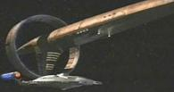
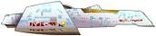
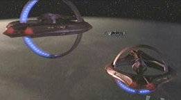

|
|
Vulcaniani - Astronavi varie |
| D'Vahl Al comando del Capitano Tellus. Nave da ricognizione che recupera il gruppo di Vulcaniani naufragati a Carbon Creek, Terra, nel 1957. Contatta l'Enterprise nel 2152 per portare ad Archer il risultato di una partita di pallanuoto: «Cal batte Stanford 7 a 3». | Carbon Creek | |
| Evan'Kora Nave che, dopo due giorni di missione nella Distesa delfica per recuperare la Seleya, ha inviato un segnale di emergenza. Dopo sei ore dall'invio del segnale di emergenza un'altra trasmissione ha rivelato che l'equipaggio era in uno stato di follia collettiva. Meno di un'ora dopo l'ultimo messaggio la nave è andata distrutta, ma non sono stati riscontrati segni di malfunzionamenti o di attacchi. | The Expanse | |
| Nyran Nave comandata nel 2152 dal capitano Tavek. | The Seventh | |
| Sh'Raan Incrociatore da combattimento. Nel 2152 è andato in soccorso dell'Enterprise, attaccata da alcune navi mazarite ed in seguito ha portato in salvo su Vulcano l'ambasciatrice V'Lar. | Fallen Hero | |
| T'Pau NSP-17938 Messa in disarmo nel 2364. | Unification - Part I | La nave è dedicata a T'Pau. |
| T'Plah Verso il 2050 ha affrontato una tempesta neutronica di classe 5 ed è stata data per dispersa con tutto l'equipaggio. | The Catwalk | |
| T'Plana-Hath Ha stabilito il primo contatto con gli Umani nel 2063. | First Contact | |
| T'Vran Vascello scientifico. | Vortex | |
| Vahklas Ha lasciato Vulcano nel 2143 con a bordo un gruppo di Vulcaniani che hanno deciso di non seguire da dottrina di Surak. | Fusion | |
| [Senza nome] Naufraga sulla Terra nel 1957 a Carbon Creek mentre stava recuperando informazioni sul lancio dello Sputnik. Un guasto dei motori a impulso costringe il capitano ad ordinare un atterraggio di emergenza durante il quale perde la vita. Sopravvivono gli altri tre marinai: T'Mir, Mestral e Stron. T'Mir e Stron vengono recuperati dalla nave D'Vahl, mentre Mestral rimane in incognito sulla terra per studiare gli umani. | Carbon Creek | |
| 2 [Senza Nome] | Cease Fire | |
| 4 Navi vulcaniane, distrutte. | Unification - Part II |